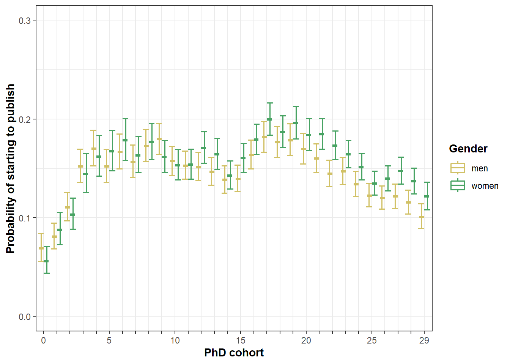

## NULLThis lab journal replicates the analyses for ‘starting to publish’.
fpackage.check: Check if packages are installed (and
install if not) in R (source).
ddlogis: double derivative function for calculating
marginal interaction effects (source).
fpackage.check <- function(packages) {
lapply(packages, FUN = function(x) {
if (!require(x, character.only = TRUE)) {
install.packages(x, dependencies = TRUE)
library(x, character.only = TRUE)
}
})
}
ddlogis <- function(X) {
-(exp(-X)/(1 + exp(-X))^2 - exp(-X) * (2 * (exp(-X) * (1 + exp(-X))))/((1 + exp(-X))^2)^2)
}tidyverse: for data manipulationggplot2: for creating figures 2-4ggpubr: for combining two figures in one (plot 2)splines splines2: for modelling non-linear
cohort relationsboot: bootstrapping for SEs of AMEskableExtra: formatting tablespackages = c("tidyverse", "ggplot2", "ggpubr", "splines", "splines2", "boot", "kableExtra")
fpackage.check(packages)We use one processed dataset.
df_startingload(file = "./data/processed/df_starting.rda")We use logistic regressions to predict whether an individual has a personal NARCIS profile and at least one publication
M1 <- glm(start_pub ~ gender, data = df_starting, family = binomial)
summary(M1)#>
#> Call:
#> glm(formula = start_pub ~ gender, family = binomial, data = df_starting)
#>
#> Deviance Residuals:
#> Min 1Q Median 3Q Max
#> -0.7042 -0.6901 -0.6901 -0.5089 2.0533
#>
#> Coefficients:
#> Estimate Std. Error z value Pr(>|z|)
#> (Intercept) -1.31354 0.01350 -97.298 <2e-16 ***
#> genderwomen 0.04566 0.02043 2.235 0.0254 *
#> gendermissing -0.66502 0.02270 -29.294 <2e-16 ***
#> ---
#> Signif. codes: 0 '***' 0.001 '**' 0.01 '*' 0.05 '.' 0.1 ' ' 1
#>
#> (Dispersion parameter for binomial family taken to be 1)
#>
#> Null deviance: 82033 on 85787 degrees of freedom
#> Residual deviance: 80858 on 85785 degrees of freedom
#> AIC: 80864
#>
#> Number of Fisher Scoring iterations: 4bootFunc <- function(data, i) {
df <- data[i, ] #bootstrap datasets
M <- glm(start_pub ~ gender, family = binomial, data = df)
suppressWarnings({
# ME gender
dfs0 <- dfs1 <- df
dfs0$gender <- "men"
dfs1$gender <- "women"
dfs1$gender <- factor(dfs1$gender, levels = levels(df$gender))
dfs0$gender <- factor(dfs0$gender, levels = levels(df$gender))
# calculate the predicted probabilities
p1 <- predict(M, type = "response", newdata = dfs1)
p0 <- predict(M, type = "response", newdata = dfs0)
# and the marginal effects
AME_gender <- mean(p1 - p0)
})
AME_gender #save results
}
b1 <- boot(x, bootFunc, R = 999, parallel = "snow", ncpus = 10)
fsave(b1, file = "boot1.rda", location = "./results/starting/")original <- b1$t0
bias <- colMeans(b1$t) - b1$t0
se <- apply(b1$t, 2, sd)
boot.df1 <- data.frame(original = original, bias = bias, se = se)
row.names(boot.df1) <- c("AME_gender")
boot.df1$t <- (boot.df1$original/boot.df1$se)
round(boot.df1, 5)#> original bias se t
#> AME_gender 0.00773 2e-04 0.00344 2.24501M2 <- glm(start_pub ~ ethnicity2, data = df_starting, family = binomial)
summary(M2)#>
#> Call:
#> glm(formula = start_pub ~ ethnicity2, family = binomial, data = df_starting)
#>
#> Deviance Residuals:
#> Min 1Q Median 3Q Max
#> -0.6626 -0.6626 -0.6011 -0.6011 1.9685
#>
#> Coefficients:
#> Estimate Std. Error z value Pr(>|z|)
#> (Intercept) -1.40441 0.01091 -128.714 < 2e-16 ***
#> ethnicity2minority -0.37757 0.06429 -5.872 4.3e-09 ***
#> ethnicity2other -0.21503 0.01885 -11.409 < 2e-16 ***
#> ---
#> Signif. codes: 0 '***' 0.001 '**' 0.01 '*' 0.05 '.' 0.1 ' ' 1
#>
#> (Dispersion parameter for binomial family taken to be 1)
#>
#> Null deviance: 82033 on 85787 degrees of freedom
#> Residual deviance: 81877 on 85785 degrees of freedom
#> AIC: 81883
#>
#> Number of Fisher Scoring iterations: 4bootFunc <- function(data, i) {
df <- data[i, ] #bootstrap datasets
M <- glm(start_pub ~ ethnicity2, family = binomial, data = df)
suppressWarnings({
# ME ethnicity
dfs0 <- dfs1 <- df
dfs0$ethnicity2 <- "majority"
dfs1$ethnicity2 <- "minority"
dfs1$ethnicity2 <- factor(dfs1$ethnicity2, levels = levels(df$ethnicity2))
dfs0$ethnicity2 <- factor(dfs0$ethnicity2, levels = levels(df$ethnicity2))
# calculate the predicted probabilities
p1 <- predict(M, type = "response", newdata = dfs1)
p0 <- predict(M, type = "response", newdata = dfs0)
# and the marginal effects
AME_ethnicity <- mean(p1 - p0)
})
AME_ethnicity #save results
}
b2 <- boot(df_starting, bootFunc, R = 999, parallel = "snow", ncpus = 10)
fsave(b2, file = "boot2.rda", location = "./results/starting/")load("./results/starting/boot2.rda")
b2 <- x
rm(x)original <- b2$t0
bias <- colMeans(b2$t) - b2$t0
se <- apply(b2$t, 2, sd)
boot.df2 <- data.frame(original = original, bias = bias, se = se)
row.names(boot.df2) <- c("AME_ethnicity")
boot.df2$t <- (boot.df2$original/boot.df2$se)
round(boot.df2, 5)#> original bias se t
#> AME_ethnicity -0.05306 -0.00033 0.00801 -6.6212See Appendix 1 Splines to see how we selected the following spline configuration
knots5 <- quantile(df_starting$phd_cohort, probs=seq(0,1,0.25))[2:4]
test3 <- glm(start_pub ~ bSpline(phd_cohort, knots=knots5,df=3), family = binomial, data = df_starting)knots5 <- quantile(df_starting$phd_cohort, probs = seq(0, 1, 0.25))[2:4]
M3 <- glm(start_pub ~ gender + ethnicity2 + uni + bSpline(phd_cohort, knots = knots5, df = 3), data = df_starting,
family = binomial)
summary(M3)#>
#> Call:
#> glm(formula = start_pub ~ gender + ethnicity2 + uni + bSpline(phd_cohort,
#> knots = knots5, df = 3), family = binomial, data = df_starting)
#>
#> Deviance Residuals:
#> Min 1Q Median 3Q Max
#> -1.7438 -0.6278 -0.3303 -0.1283 3.4071
#>
#> Coefficients:
#> Estimate Std. Error z value Pr(>|z|)
#> (Intercept) -3.025053 0.102165 -29.609 < 2e-16 ***
#> genderwomen 0.001666 0.023177 0.072 0.943
#> gendermissing -1.462188 0.030110 -48.562 < 2e-16 ***
#> ethnicity2minority -0.355192 0.071213 -4.988 6.11e-07 ***
#> ethnicity2other -0.156063 0.021801 -7.159 8.15e-13 ***
#> uniLU -0.018678 0.066188 -0.282 0.778
#> uniRU 2.043165 0.050514 40.448 < 2e-16 ***
#> uniRUG -1.288330 0.076557 -16.828 < 2e-16 ***
#> uniTUD -1.063854 0.089911 -11.832 < 2e-16 ***
#> uniTUE -1.158010 0.090116 -12.850 < 2e-16 ***
#> uniTI 0.062811 0.086628 0.725 0.468
#> uniUM 1.642026 0.055009 29.850 < 2e-16 ***
#> uniUT 2.084985 0.054222 38.453 < 2e-16 ***
#> uniUU 1.436107 0.051816 27.716 < 2e-16 ***
#> uniUvA 0.838398 0.052263 16.042 < 2e-16 ***
#> uniVU 2.129574 0.058023 36.702 < 2e-16 ***
#> uniWUR 3.010270 0.055377 54.359 < 2e-16 ***
#> bSpline(phd_cohort, knots = knots5, df = 3)1 1.335447 0.169038 7.900 2.78e-15 ***
#> bSpline(phd_cohort, knots = knots5, df = 3)2 0.011234 0.098812 0.114 0.909
#> bSpline(phd_cohort, knots = knots5, df = 3)3 1.721424 0.114230 15.070 < 2e-16 ***
#> bSpline(phd_cohort, knots = knots5, df = 3)4 0.583103 0.100407 5.807 6.34e-09 ***
#> bSpline(phd_cohort, knots = knots5, df = 3)5 0.637943 0.111697 5.711 1.12e-08 ***
#> bSpline(phd_cohort, knots = knots5, df = 3)6 0.482482 0.100926 4.781 1.75e-06 ***
#> ---
#> Signif. codes: 0 '***' 0.001 '**' 0.01 '*' 0.05 '.' 0.1 ' ' 1
#>
#> (Dispersion parameter for binomial family taken to be 1)
#>
#> Null deviance: 82033 on 85787 degrees of freedom
#> Residual deviance: 65501 on 85765 degrees of freedom
#> AIC: 65547
#>
#> Number of Fisher Scoring iterations: 6bootFunc <- function(data, i) {
df <- data[i, ] #bootstrap datasets
knots5 <- quantile(df$phd_cohort, probs = seq(0, 1, 0.25))[2:4]
M <- glm(start_pub ~ gender + ethnicity2 + uni + splines2::bSpline(phd_cohort, knots = knots5, df = 3),
family = binomial, data = df)
suppressWarnings({
# ME gender
dfs0 <- dfs1 <- df
dfs0$gender <- "men"
dfs1$gender <- "women"
dfs1$gender <- factor(dfs1$gender, levels = levels(df$gender))
dfs0$gender <- factor(dfs0$gender, levels = levels(df$gender))
ME_gender <- mean(predict(M, dfs1, type = "response") - predict(M, dfs0, type = "response"))
# ME ethnicity
dfs0 <- dfs1 <- df
dfs0$ethnicity2 <- "majority"
dfs1$ethnicity2 <- "minority"
dfs1$ethnicity2 <- factor(dfs1$ethnicity2, levels = levels(df$ethnicity2))
dfs0$ethnicity2 <- factor(dfs0$ethnicity2, levels = levels(df$ethnicity2))
ME_ethnicity <- mean(predict(M, dfs1, type = "response") - predict(M, dfs0, type = "response"))
})
c(ME_gender, ME_ethnicity) #save results
}
b3 <- boot(df_starting, bootFunc, R = 999, parallel = "snow", ncpus = 10)
fsave(b3, file = "boot3.rda", location = "./results/starting/")original <- b3$t0
bias <- colMeans(b3$t) - b3$t0
se <- apply(b3$t, 2, sd)
boot.df3 <- data.frame(original = original, bias = bias, se = se)
row.names(boot.df3) <- c("AME_gender", "AME_ethnicity")
boot.df3$t <- (boot.df3$original/boot.df3$se)
round(boot.df3, 5)#> original bias se t
#> AME_gender 0.00024 0.00008 0.00317 0.07562
#> AME_ethnicity -0.04110 0.00018 0.00758 -5.42180M4 <- glm(start_pub ~ gender + ethnicity2 + uni + bSpline(phd_cohort, knots = knots5, df = 3) + gender *
phd_cohort + ethnicity2 * phd_cohort, data = df_starting, family = binomial)
summary(M4)#>
#> Call:
#> glm(formula = start_pub ~ gender + ethnicity2 + uni + bSpline(phd_cohort,
#> knots = knots5, df = 3) + gender * phd_cohort + ethnicity2 *
#> phd_cohort, family = binomial, data = df_starting)
#>
#> Deviance Residuals:
#> Min 1Q Median 3Q Max
#> -1.7551 -0.6536 -0.3240 -0.1374 3.6719
#>
#> Coefficients: (1 not defined because of singularities)
#> Estimate Std. Error z value Pr(>|z|)
#> (Intercept) -2.783799 0.106246 -26.201 < 2e-16 ***
#> genderwomen -0.072519 0.070853 -1.024 0.306071
#> gendermissing -2.548950 0.072106 -35.350 < 2e-16 ***
#> ethnicity2minority -0.441441 0.272337 -1.621 0.105032
#> ethnicity2other -0.255907 0.067565 -3.788 0.000152 ***
#> uniLU 0.023694 0.066262 0.358 0.720659
#> uniRU 2.024585 0.050486 40.102 < 2e-16 ***
#> uniRUG -1.300225 0.076558 -16.984 < 2e-16 ***
#> uniTUD -0.988134 0.090074 -10.970 < 2e-16 ***
#> uniTUE -1.151597 0.090119 -12.779 < 2e-16 ***
#> uniTI 0.066166 0.086640 0.764 0.445054
#> uniUM 1.674924 0.055099 30.399 < 2e-16 ***
#> uniUT 2.111909 0.054335 38.868 < 2e-16 ***
#> uniUU 1.450850 0.051851 27.981 < 2e-16 ***
#> uniUvA 0.885765 0.052369 16.914 < 2e-16 ***
#> uniVU 2.029911 0.058266 34.838 < 2e-16 ***
#> uniWUR 3.104356 0.055956 55.479 < 2e-16 ***
#> bSpline(phd_cohort, knots = knots5, df = 3)1 1.439530 0.174955 8.228 < 2e-16 ***
#> bSpline(phd_cohort, knots = knots5, df = 3)2 -0.115677 0.101402 -1.141 0.253962
#> bSpline(phd_cohort, knots = knots5, df = 3)3 1.419255 0.118845 11.942 < 2e-16 ***
#> bSpline(phd_cohort, knots = knots5, df = 3)4 0.193317 0.107035 1.806 0.070901 .
#> bSpline(phd_cohort, knots = knots5, df = 3)5 0.255837 0.119292 2.145 0.031982 *
#> bSpline(phd_cohort, knots = knots5, df = 3)6 0.086143 0.110049 0.783 0.433759
#> phd_cohort NA NA NA NA
#> genderwomen:phd_cohort 0.005494 0.003337 1.646 0.099697 .
#> gendermissing:phd_cohort 0.062583 0.003615 17.314 < 2e-16 ***
#> ethnicity2minority:phd_cohort 0.004519 0.012144 0.372 0.709790
#> ethnicity2other:phd_cohort 0.004437 0.003195 1.389 0.164880
#> ---
#> Signif. codes: 0 '***' 0.001 '**' 0.01 '*' 0.05 '.' 0.1 ' ' 1
#>
#> (Dispersion parameter for binomial family taken to be 1)
#>
#> Null deviance: 82033 on 85787 degrees of freedom
#> Residual deviance: 65157 on 85761 degrees of freedom
#> AIC: 65211
#>
#> Number of Fisher Scoring iterations: 6bootFunc <- function(data, i) {
df <- data[i, ] #bootstrap datasets
knots5 <- quantile(df$phd_cohort, probs = seq(0, 1, 0.25))[2:4]
M <- glm(start_pub ~ gender + ethnicity2 + uni + splines2::bSpline(phd_cohort, knots = knots5, df = 3) +
phd_cohort * gender + phd_cohort * ethnicity2, family = binomial, data = df)
suppressWarnings({
s <- 0.1
# ME gender
dfs0 <- dfs1 <- df
dfs0$gender <- "men"
dfs1$gender <- "women"
dfs1$gender <- factor(dfs1$gender, levels = levels(df$gender))
dfs0$gender <- factor(dfs0$gender, levels = levels(df$gender))
ME_gender <- mean(predict(M, dfs1, type = "response") - predict(M, dfs0, type = "response"))
# ME ethnicity
dfs0 <- dfs1 <- df
dfs0$ethnicity2 <- "majority"
dfs1$ethnicity2 <- "minority"
dfs1$ethnicity2 <- factor(dfs1$ethnicity2, levels = levels(df$ethnicity2))
dfs0$ethnicity2 <- factor(dfs0$ethnicity2, levels = levels(df$ethnicity2))
ME_ethnicity <- mean(predict(M, dfs1, type = "response") - predict(M, dfs0, type = "response"))
# ME cohort
dfs0 <- dfs1 <- df
dfs0$phd_cohort <- df$phd_cohort - s
dfs1$phd_cohort <- df$phd_cohort + s
ME_phd_cohort <- mean((predict(M, dfs1, type = "response") - predict(M, dfs0, type = "response"))/(2 *
s))
# ME gender * cohort
dfwomencp <- dfwomencm <- dfmencp <- dfmencm <- df
dfwomencp$gender <- dfwomencm$gender <- "women"
dfmencp$gender <- dfmencm$gender <- "men"
dfwomencp$gender <- factor(dfwomencp$gender, levels = levels(df$gender))
dfwomencm$gender <- factor(dfwomencm$gender, levels = levels(df$gender))
dfmencp$gender <- factor(dfmencp$gender, levels = levels(df$gender))
dfmencm$gender <- factor(dfmencm$gender, levels = levels(df$gender))
dfwomencp$phd_cohort <- dfmencp$phd_cohort <- df$phd_cohort + s
dfwomencm$phd_cohort <- dfmencm$phd_cohort <- df$phd_cohort - s
# calculate the predicted probabilities
gp11 <- predict(M, type = "response", newdata = dfwomencp)
gp10 <- predict(M, type = "response", newdata = dfwomencm)
gp01 <- predict(M, type = "response", newdata = dfmencp)
gp00 <- predict(M, type = "response", newdata = dfmencm)
# and the marginal effects. be aware of all the brackets. :-(
ME_gender_cohort <- mean(((gp11 - gp01) - (gp10 - gp00))/(2 * s))
# ME ethnicity * cohort
dfminoritycp <- dfminoritycm <- dfdutchcp <- dfdutchcm <- df
dfminoritycp$ethnicity2 <- dfminoritycm$ethnicity2 <- "minority"
dfdutchcp$ethnicity2 <- dfdutchcm$ethnicity2 <- "majority"
dfminoritycp$ethnicity2 <- factor(dfminoritycp$ethnicity2, levels = levels(df$ethnicity2))
dfminoritycm$ethnicity2 <- factor(dfminoritycm$ethnicity2, levels = levels(df$ethnicity2))
dfdutchcp$ethnicity2 <- factor(dfdutchcp$ethnicity2, levels = levels(df$ethnicity2))
dfdutchcm$ethnicity2 <- factor(dfdutchcm$ethnicity2, levels = levels(df$ethnicity2))
dfminoritycp$phd_cohort <- dfdutchcp$phd_cohort <- df$phd_cohort + s
dfminoritycm$phd_cohort <- dfdutchcm$phd_cohort <- df$phd_cohort - s
# calculate the predicted probabilities
ep11 <- predict(M, type = "response", newdata = dfminoritycp)
ep10 <- predict(M, type = "response", newdata = dfminoritycm)
ep01 <- predict(M, type = "response", newdata = dfdutchcp)
ep00 <- predict(M, type = "response", newdata = dfdutchcm)
# and the marginal effects. be aware of all the brackets. :-(
ME_ethnicity_cohort <- mean(((ep11 - ep01) - (ep10 - ep00))/(2 * s))
})
c(ME_gender, ME_ethnicity, ME_phd_cohort, ME_gender_cohort, ME_ethnicity_cohort) #save results
}
b4 <- boot(df_starting, bootFunc, R = 999, parallel = "snow", ncpus = 10)
fsave(b4, file = "boot4.rda", location = "./results/starting/")original <- b4$t0
bias <- colMeans(b4$t) - b4$t0
se <- apply(b4$t, 2, sd)
boot.df4 <- data.frame(original = original, bias = bias, se = se)
row.names(boot.df4) <- c("AME_gender", "AME_ethnicity", "AME_cohort", "AME_gender_cohort", "AME_ethnicity_cohort")
boot.df4$t <- (boot.df4$original/boot.df4$se)
round(boot.df4, 5)#> original bias se t
#> AME_gender 0.00409 0.00005 0.00346 1.18434
#> AME_ethnicity -0.04092 0.00038 0.00806 -5.07701
#> AME_cohort -0.00196 0.00001 0.00047 -4.14489
#> AME_gender_cohort 0.00063 -0.00001 0.00044 1.45635
#> AME_ethnicity_cohort 0.00063 0.00001 0.00103 0.61113# defining colors
menc <- "#D1C166"
womenc <- "#48a363"
majc <- "#39839D"
minc <- "#B85042"
# Calculating predicted probabilities
M1 %>%
predict(df_starting, type = "link", se.fit = TRUE) -> plot2a
# calculate upper and lower bounds for the confidence intervals
plot2a$upper <- plot2a$fit + (1.96 * plot2a$se.fit)
plot2a$lower <- plot2a$fit - (1.96 * plot2a$se.fit)
plot2a <- as.data.frame(plot2a)
# excluding gender = missing from the plot
plot2a$gender <- df_starting$gender
plot2a <- plot2a[plot2a$gender != "missing", ]
plot2a %>%
group_by(gender) %>%
summarise(fit = plogis(mean(fit)), upper = plogis(mean(upper)), lower = plogis(mean(lower))) ->
plot2a
ggplot(plot2a, aes(gender, fit, color = (gender))) + geom_boxplot(width = 0.1) + geom_errorbar(aes(ymin = lower,
ymax = upper), lwd = 0.8, width = 0.05) + ylim(0, 0.3) + labs(x = "Gender", y = "Probability of starting to publish") +
theme_bw() + scale_color_manual(values = c(menc, womenc), name = "Gender") + geom_text(x = 0.5, y = 0.28,
label = "A", size = 10, color = "black") + theme(axis.title = element_text(face = "bold"), legend.position = "none") ->
plot2a
# Exact gender differences in probability of starting to publish
plot2a$data#> # A tibble: 2 x 4
#> gender fit upper lower
#> <fct> <dbl> <dbl> <dbl>
#> 1 men 0.212 0.216 0.208
#> 2 women 0.220 0.225 0.215# Calculating predicted probabilities
M2 %>%
predict(df_starting, type = "link", se.fit = TRUE) -> plot2b
# Calculating confidence intervals
plot2b$upper <- plot2b$fit + (1.96 * plot2b$se.fit)
plot2b$lower <- plot2b$fit - (1.96 * plot2b$se.fit)
plot2b <- as.data.frame(plot2b)
plot2b$ethnicity2 <- df_starting$ethnicity2
# Removing ethnicity 'other' from plot
plot2b <- plot2b[plot2b$ethnicity2 != "other", ]
plot2b %>%
group_by(ethnicity2) %>%
summarise(fit = plogis(mean(fit)), upper = plogis(mean(upper)), lower = plogis(mean(lower))) ->
plot2b
ggplot(plot2b, aes(as.factor(ethnicity2), fit, color = (ethnicity2))) + geom_boxplot(width = 0.1) + geom_errorbar(aes(ymin = lower,
ymax = upper), lwd = 0.8, width = 0.05) + ylim(0, 0.3) + labs(x = "Ethnicity", y = "Probability of starting to publish") +
theme_bw() + scale_color_manual(values = c(majc, minc), name = "Ethnicity") + geom_text(x = 0.5,
y = 0.28, label = "B", size = 10, color = "black") + theme(axis.title = element_text(face = "bold"),
legend.position = "none") -> plot2b
# Exact ethnic differences in probability of starting to publish
plot2b$data#> # A tibble: 2 x 4
#> ethnicity2 fit upper lower
#> <fct> <dbl> <dbl> <dbl>
#> 1 majority 0.197 0.201 0.194
#> 2 minority 0.144 0.160 0.129plot2 <- ggarrange(plot2a, plot2b, ncol = 2, nrow = 1)
plot2plot4 <- plot3 <- M4 %>%
predict(df_starting, type = "link", se.fit = TRUE)
plot3 <- as.data.frame(plot3)
plot3$gender <- df_starting$gender
plot3$phd_cohort <- df_starting$phd_cohort
plot3 <- plot3[plot3$gender != "missing", ]
plot3$upper <- plot3$fit + (1.96 * plot3$se.fit)
plot3$lower <- plot3$fit - (1.96 * plot3$se.fit)
plot3 %>%
group_by(gender, phd_cohort) %>%
summarise(fit = plogis(mean(fit)), upper = plogis(mean(upper)), lower = plogis(mean(lower))) ->
plot3
ggplot(plot3, aes(x = as.factor(phd_cohort), y = fit, color = gender)) + geom_boxplot(lwd = 0.6, position = "dodge") +
geom_errorbar(aes(ymin = lower, ymax = upper), lwd = 0.7, position = "dodge") + ylim(0, 0.3) + labs(x = "PhD cohort",
y = "Probability of starting to publish") + theme_bw() + scale_x_discrete(labels = c("0", c(rep(" ",
4)), "5", c(rep(" ", 4)), "10", c(rep(" ", 4)), "15", c(rep(" ", 4)), "20", c(rep(" ", 4)), "25",
c(rep("", 3)), "29")) + scale_color_manual(values = c(men = menc, women = womenc), name = "Gender") +
theme(axis.title = element_text(face = "bold"), legend.title = element_text(face = "bold"))
plot4 <- as.data.frame(plot4)
plot4$ethnicity2 <- df_starting$ethnicity2
plot4$phd_cohort <- df_starting$phd_cohort
plot4 <- plot4[plot4$ethnicity2 != "other", ]
plot4$upper <- plot4$fit + (1.96 * plot4$se.fit)
plot4$lower <- plot4$fit - (1.96 * plot4$se.fit)
plot4 %>%
group_by(ethnicity2, phd_cohort) %>%
summarise(fit = plogis(mean(fit)), upper = plogis(mean(upper)), lower = plogis(mean(lower))) ->
plot4
ggplot(plot4, aes(x = as.factor(phd_cohort), y = fit, color = ethnicity2)) + geom_boxplot(lwd = 0.6,
position = "dodge") + geom_errorbar(aes(ymin = lower, ymax = upper), lwd = 0.7, position = "dodge") +
ylim(0, 0.5) + labs(x = "PhD cohort", y = "Probability of starting to publish") + theme_bw() + scale_x_discrete(labels = c("0",
c(rep(" ", 4)), "5", c(rep(" ", 4)), "10", c(rep(" ", 4)), "15", c(rep(" ", 4)), "20", c(rep(" ",
4)), "25", c(rep("", 4)))) + scale_color_manual(values = c(majority = majc, minority = minc),
name = "Ethnicity") + theme(axis.title = element_text(face = "bold"), legend.title = element_text(face = "bold"))columns <- c(rep(c("B", "SE"), 4))
rows <- c("Intercept", "Gender: ref=men", "Women", "Missing gender", "Ethnicity: ref=majority", "Minority",
"Other", "University: ref=Erasmus University", "Leiden University", "Radboud University", "University of Groningen",
"Delft University of Technology", "Eindhoven University of Technology", "Tilburg University", "Maastricht University",
"University of Twente", "Utrecht University", "University of Amsterdam", "Vrije Universiteit Amsterdam",
"Wageningen University and Research Centre", "PhD cohort", "Knot #1", "Knot #2", "Knot #3", "Knot #4",
"Knot #5", "Knot #6", "Cohort interactions", "PhD cohort * woman", "PhD cohort * missing gender",
"PhD cohort * ethnic minority", "PhD cohort * other ethnicity", "<strong>AIC</strong></p>", "<strong>N</strong></p>")
t3 <- data.frame(matrix(nrow = length(rows), ncol = length(columns)))
colnames(t3) <- columns
rownames(t3) <- rows
# names(M4$coefficients)
# Model 1
t3[c(1, 3, 4), 1] <- M1$coefficients # log odds
t3[c(1, 3, 4), 2] <- summary(M1)$coefficients[, 2] # SE log odds
# Model 2
t3[c(1, 6, 7), 3] <- M2$coefficients
t3[c(1, 6, 7), 4] <- summary(M2)$coefficients[, 2]
# Model 3
t3[c(1, 3:4, 6:7, 9:20, 22:27), 5] <- M3$coefficients
t3[c(1, 3:4, 6:7, 9:20, 22:27), 6] <- summary(M3)$coefficients[, 2]
# Model 4
M4_ <- data.frame(summary(M4)$coefficients[, 1])
M4_[, 2] <- summary(M4)$coefficients[, 2]
t3[c(1, 3:4, 6:7, 9:20, 22:27, 29:32), 7] <- M4_[, 1]
t3[c(1, 3:4, 6:7, 9:20, 22:27, 29:32), 8] <- M4_[, 2]
# AIC
t3[33, 1] <- round(M1$aic, 0)
t3[33, 3] <- round(M2$aic, 0)
t3[33, 5] <- round(M4$aic, 0)
t3[33, 7] <- round(M4$aic, 0)
# rounding
t3[c(1, 3, 4), c(1, 2)] <- format(round(t3[c(1, 3, 4), c(1, 2)], 2), nsmall = 2)
t3[c(1, 6, 7), c(3, 4)] <- format(round(t3[c(1, 6, 7), c(3, 4)], 2), nsmall = 2)
t3[c(1, 3, 4, 6, 7, 9:20, 22:27), c(5:6)] <- format(round(t3[c(1, 3, 4, 6, 7, 9:20, 22:27), c(5:6)],
2), nsmall = 2)
t3[c(1, 3, 4, 6, 7, 9:20, 22:27, 29:32), c(7, 8)] <- format(round(t3[c(1, 3, 4, 6, 7, 9:20, 22:27, 29:32),
c(7, 8)], 2), nsmall = 2)
# sample size
t3[34, c(1, 3, 5, 7)] <- rep(nrow(df_starting), 4)
# Adding significance codes
t3[1, 1] <- paste0(t3[1, 1], "***") # intercept
t3[1, 3] <- paste0(t3[1, 3], "***")
t3[1, 5] <- paste0(t3[1, 5], "***")
t3[1, 7] <- paste0(t3[1, 7], "***")
t3[1, 1] <- paste0(t3[1, 1], "*") # gender
t3[4, 1] <- paste0(t3[4, 1], "***") # gender missing
t3[4, 5] <- paste0(t3[4, 5], "***")
t3[4, 7] <- paste0(t3[4, 7], "***")
t3[6, 3] <- paste0(t3[6, 3], "***") # ethnic minorities
t3[6, 5] <- paste0(t3[6, 5], "***")
t3[7, 3] <- paste0(t3[7, 3], "***") # other ethnicity
t3[7, 5] <- paste0(t3[7, 5], "***")
t3[7, 7] <- paste0(t3[7, 7], "***")
t3[10, 5] <- paste0(t3[10, 5], "***") # RU
t3[10, 7] <- paste0(t3[10, 7], "***")
t3[11, 5] <- paste0(t3[11, 5], "***") # RUG
t3[11, 7] <- paste0(t3[11, 7], "***")
t3[12, 5] <- paste0(t3[12, 5], "***") # TUD
t3[12, 7] <- paste0(t3[12, 7], "***")
t3[13, 5] <- paste0(t3[13, 5], "***") # TUE
t3[13, 7] <- paste0(t3[13, 7], "***")
t3[15, 5] <- paste0(t3[15, 5], "***") # UM
t3[15, 7] <- paste0(t3[15, 7], "***")
t3[16, 5] <- paste0(t3[16, 5], "***") #UT
t3[16, 7] <- paste0(t3[16, 7], "***")
t3[17, 5] <- paste0(t3[17, 5], "***") #UU
t3[17, 7] <- paste0(t3[17, 7], "***")
t3[18, 5] <- paste0(t3[18, 5], "***") #UvA
t3[18, 7] <- paste0(t3[18, 7], "***")
t3[19, 5] <- paste0(t3[19, 5], "***") #VU
t3[19, 7] <- paste0(t3[19, 7], "***")
t3[20, 5] <- paste0(t3[20, 5], "***") #WUR
t3[20, 7] <- paste0(t3[20, 7], "***")
t3[22, 5] <- paste0(t3[22, 5], "***") # coh 1
t3[22, 7] <- paste0(t3[22, 7], "***")
t3[24, 5] <- paste0(t3[24, 5], "***") # coh 3
t3[24, 7] <- paste0(t3[24, 7], "***")
t3[25, 5] <- paste0(t3[25, 5], "***") # coh 4
t3[26, 5] <- paste0(t3[26, 5], "***") # coh 5
t3[26, 7] <- paste0(t3[26, 7], "*")
t3[27, 5] <- paste0(t3[27, 5], "***") # coh 6
t3[30, 7] <- paste0(t3[30, 7], "***") # coh * gender missing
t3[is.na(t3)] <- ""t3 %>%
kable(format = "html", caption = "<b>Table 3.</b> Logistic regression on starting to publish", escape = FALSE) %>%
add_header_above(., c(` ` = 1, `Model 1` = 2, `Model 2` = 2, `Model 3` = 2, `Model 4` = 2), escape = FALSE,
bold = TRUE) %>%
row_spec(row = c(2, 5, 8, 21, 28), bold = T) %>%
kable_classic(full_width = F, html_font = "Cambria") %>%
kable_styling(font_size = 12) -> table3
table3| B | SE | B | SE | B | SE | B | SE | |
|---|---|---|---|---|---|---|---|---|
| Intercept | -1.31**** | 0.01 | -1.40*** | 0.01 | -3.03*** | 0.10 | -2.78*** | 0.11 |
| Gender: ref=men | ||||||||
| Women | 0.05 | 0.02 | 0.00 | 0.02 | -0.07 | 0.07 | ||
| Missing gender | -0.67*** | 0.02 | -1.46*** | 0.03 | -2.55*** | 0.07 | ||
| Ethnicity: ref=majority | ||||||||
| Minority | -0.38*** | 0.06 | -0.36*** | 0.07 | -0.44 | 0.27 | ||
| Other | -0.22*** | 0.02 | -0.16*** | 0.02 | -0.26*** | 0.07 | ||
| University: ref=Erasmus University | ||||||||
| Leiden University | -0.02 | 0.07 | 0.02 | 0.07 | ||||
| Radboud University | 2.04*** | 0.05 | 2.02*** | 0.05 | ||||
| University of Groningen | -1.29*** | 0.08 | -1.30*** | 0.08 | ||||
| Delft University of Technology | -1.06*** | 0.09 | -0.99*** | 0.09 | ||||
| Eindhoven University of Technology | -1.16*** | 0.09 | -1.15*** | 0.09 | ||||
| Tilburg University | 0.06 | 0.09 | 0.07 | 0.09 | ||||
| Maastricht University | 1.64*** | 0.06 | 1.67*** | 0.06 | ||||
| University of Twente | 2.08*** | 0.05 | 2.11*** | 0.05 | ||||
| Utrecht University | 1.44*** | 0.05 | 1.45*** | 0.05 | ||||
| University of Amsterdam | 0.84*** | 0.05 | 0.89*** | 0.05 | ||||
| Vrije Universiteit Amsterdam | 2.13*** | 0.06 | 2.03*** | 0.06 | ||||
| Wageningen University and Research Centre | 3.01*** | 0.06 | 3.10*** | 0.06 | ||||
| PhD cohort | ||||||||
| Knot #1 | 1.34*** | 0.17 | 1.44*** | 0.17 | ||||
| Knot #2 | 0.01 | 0.10 | -0.12 | 0.10 | ||||
| Knot #3 | 1.72*** | 0.11 | 1.42*** | 0.12 | ||||
| Knot #4 | 0.58*** | 0.10 | 0.19 | 0.11 | ||||
| Knot #5 | 0.64*** | 0.11 | 0.26* | 0.12 | ||||
| Knot #6 | 0.48*** | 0.10 | 0.09 | 0.11 | ||||
| Cohort interactions | ||||||||
| PhD cohort * woman | 0.01 | 0.00 | ||||||
| PhD cohort * missing gender | 0.06*** | 0.00 | ||||||
| PhD cohort * ethnic minority | 0.00 | 0.01 | ||||||
| PhD cohort * other ethnicity | 0.00 | 0.00 | ||||||
| AIC | 80864 | 81883 | 65211 | 65211 | ||||
| N | 85788 | 85788 | 85788 | 85788 |
M2b <- glm(start_pub ~ ethnicity3, data = df_starting, family = binomial)
summary(M2b)#>
#> Call:
#> glm(formula = start_pub ~ ethnicity3, family = binomial, data = df_starting)
#>
#> Deviance Residuals:
#> Min 1Q Median 3Q Max
#> -0.6626 -0.6626 -0.6033 -0.5999 1.9685
#>
#> Coefficients:
#> Estimate Std. Error z value Pr(>|z|)
#> (Intercept) -1.40441 0.01091 -128.714 < 2e-16 ***
#> ethnicity3minority -0.37757 0.06429 -5.872 4.30e-09 ***
#> ethnicity3other -0.20696 0.02830 -7.314 2.59e-13 ***
#> ethnicity3missing -0.21929 0.02192 -10.005 < 2e-16 ***
#> ---
#> Signif. codes: 0 '***' 0.001 '**' 0.01 '*' 0.05 '.' 0.1 ' ' 1
#>
#> (Dispersion parameter for binomial family taken to be 1)
#>
#> Null deviance: 82033 on 85787 degrees of freedom
#> Residual deviance: 81877 on 85784 degrees of freedom
#> AIC: 81885
#>
#> Number of Fisher Scoring iterations: 4M3b <- glm(start_pub ~ gender + ethnicity3 + uni + bSpline(phd_cohort, knots = knots5, df = 3), data = df_starting,
family = binomial)
summary(M3b)#>
#> Call:
#> glm(formula = start_pub ~ gender + ethnicity3 + uni + bSpline(phd_cohort,
#> knots = knots5, df = 3), family = binomial, data = df_starting)
#>
#> Deviance Residuals:
#> Min 1Q Median 3Q Max
#> -1.7437 -0.6279 -0.3303 -0.1283 3.4008
#>
#> Coefficients:
#> Estimate Std. Error z value Pr(>|z|)
#> (Intercept) -3.024648 0.102163 -29.606 < 2e-16 ***
#> genderwomen 0.001781 0.023178 0.077 0.939
#> gendermissing -1.462373 0.030110 -48.567 < 2e-16 ***
#> ethnicity3minority -0.355084 0.071212 -4.986 6.16e-07 ***
#> ethnicity3other -0.134768 0.032163 -4.190 2.79e-05 ***
#> ethnicity3missing -0.167103 0.025055 -6.669 2.57e-11 ***
#> uniLU -0.018805 0.066188 -0.284 0.776
#> uniRU 2.043052 0.050514 40.445 < 2e-16 ***
#> uniRUG -1.288333 0.076557 -16.828 < 2e-16 ***
#> uniTUD -1.064059 0.089912 -11.834 < 2e-16 ***
#> uniTUE -1.158016 0.090116 -12.850 < 2e-16 ***
#> uniTI 0.062603 0.086629 0.723 0.470
#> uniUM 1.642174 0.055010 29.853 < 2e-16 ***
#> uniUT 2.084744 0.054222 38.448 < 2e-16 ***
#> uniUU 1.436189 0.051817 27.717 < 2e-16 ***
#> uniUvA 0.838617 0.052264 16.046 < 2e-16 ***
#> uniVU 2.130738 0.058038 36.713 < 2e-16 ***
#> uniWUR 3.010248 0.055377 54.359 < 2e-16 ***
#> bSpline(phd_cohort, knots = knots5, df = 3)1 1.335064 0.169036 7.898 2.83e-15 ***
#> bSpline(phd_cohort, knots = knots5, df = 3)2 0.010780 0.098812 0.109 0.913
#> bSpline(phd_cohort, knots = knots5, df = 3)3 1.721160 0.114228 15.068 < 2e-16 ***
#> bSpline(phd_cohort, knots = knots5, df = 3)4 0.582322 0.100409 5.800 6.65e-09 ***
#> bSpline(phd_cohort, knots = knots5, df = 3)5 0.637164 0.111698 5.704 1.17e-08 ***
#> bSpline(phd_cohort, knots = knots5, df = 3)6 0.481598 0.100928 4.772 1.83e-06 ***
#> ---
#> Signif. codes: 0 '***' 0.001 '**' 0.01 '*' 0.05 '.' 0.1 ' ' 1
#>
#> (Dispersion parameter for binomial family taken to be 1)
#>
#> Null deviance: 82033 on 85787 degrees of freedom
#> Residual deviance: 65500 on 85764 degrees of freedom
#> AIC: 65548
#>
#> Number of Fisher Scoring iterations: 6M4b <- glm(start_pub ~ gender + ethnicity3 + uni + bSpline(phd_cohort, knots = knots5, df = 3) + gender *
phd_cohort + ethnicity3 * phd_cohort, data = df_starting, family = binomial)
summary(M4b)#>
#> Call:
#> glm(formula = start_pub ~ gender + ethnicity3 + uni + bSpline(phd_cohort,
#> knots = knots5, df = 3) + gender * phd_cohort + ethnicity3 *
#> phd_cohort, family = binomial, data = df_starting)
#>
#> Deviance Residuals:
#> Min 1Q Median 3Q Max
#> -1.7551 -0.6536 -0.3242 -0.1379 3.6763
#>
#> Coefficients: (1 not defined because of singularities)
#> Estimate Std. Error z value Pr(>|z|)
#> (Intercept) -2.783877 0.106250 -26.201 < 2e-16 ***
#> genderwomen -0.072805 0.070856 -1.028 0.30418
#> gendermissing -2.548882 0.072109 -35.347 < 2e-16 ***
#> ethnicity3minority -0.441709 0.272345 -1.622 0.10483
#> ethnicity3other -0.271954 0.106025 -2.565 0.01032 *
#> ethnicity3missing -0.246675 0.078317 -3.150 0.00163 **
#> uniLU 0.023523 0.066263 0.355 0.72259
#> uniRU 2.024517 0.050486 40.101 < 2e-16 ***
#> uniRUG -1.300256 0.076558 -16.984 < 2e-16 ***
#> uniTUD -0.988314 0.090075 -10.972 < 2e-16 ***
#> uniTUE -1.151544 0.090119 -12.778 < 2e-16 ***
#> uniTI 0.065843 0.086642 0.760 0.44729
#> uniUM 1.675077 0.055099 30.401 < 2e-16 ***
#> uniUT 2.111596 0.054336 38.862 < 2e-16 ***
#> uniUU 1.450798 0.051851 27.980 < 2e-16 ***
#> uniUvA 0.885999 0.052370 16.918 < 2e-16 ***
#> uniVU 2.031196 0.058284 34.850 < 2e-16 ***
#> uniWUR 3.104231 0.055957 55.476 < 2e-16 ***
#> bSpline(phd_cohort, knots = knots5, df = 3)1 1.439455 0.174957 8.228 < 2e-16 ***
#> bSpline(phd_cohort, knots = knots5, df = 3)2 -0.115670 0.101409 -1.141 0.25402
#> bSpline(phd_cohort, knots = knots5, df = 3)3 1.419468 0.118849 11.944 < 2e-16 ***
#> bSpline(phd_cohort, knots = knots5, df = 3)4 0.193232 0.107043 1.805 0.07105 .
#> bSpline(phd_cohort, knots = knots5, df = 3)5 0.255462 0.119296 2.141 0.03224 *
#> bSpline(phd_cohort, knots = knots5, df = 3)6 0.085719 0.110052 0.779 0.43605
#> phd_cohort NA NA NA NA
#> genderwomen:phd_cohort 0.005517 0.003337 1.653 0.09835 .
#> gendermissing:phd_cohort 0.062571 0.003615 17.310 < 2e-16 ***
#> ethnicity3minority:phd_cohort 0.004535 0.012145 0.373 0.70884
#> ethnicity3other:phd_cohort 0.006128 0.004904 1.250 0.21145
#> ethnicity3missing:phd_cohort 0.003497 0.003700 0.945 0.34467
#> ---
#> Signif. codes: 0 '***' 0.001 '**' 0.01 '*' 0.05 '.' 0.1 ' ' 1
#>
#> (Dispersion parameter for binomial family taken to be 1)
#>
#> Null deviance: 82033 on 85787 degrees of freedom
#> Residual deviance: 65156 on 85759 degrees of freedom
#> AIC: 65214
#>
#> Number of Fisher Scoring iterations: 6Copyright © 2023